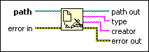

Get Type and Creator Function
Owning Palette: Advanced File VIs and Functions
Requires: Base Development System
Reads the type and creator of the file specified by path. type and creator are four-character strings. This function does not work for files inside an LLB.
If the specified file has a name ending with characters that LabVIEW recognizes, such as .vi for the LVIN file type and .llb for the LVAR file type, this function returns that type in type and LBVW in creator. If the specified file is not a known LabVIEW file type, this function returns ???? in type and creator.

 Add to the block diagram Add to the block diagram |
 Find on the palette Find on the palette |